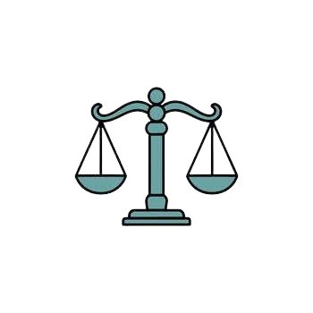

SELAMAT DATANG DI KEGIATAN SEHARI-HARI SAYA
Memberdayakan Anda untuk menjalani hidup secara terarah melalui kebiasaan yang terstruktur

Temukan Iramamu
Jelajahi rutinitas pagi, kerja, dan malam yang dirancang khusus untuk mengoptimalkan kesejahteraan Anda.
Membangun Kebiasaan yang Lebih Baik
Pantau kemajuan Anda dan bentuk kebiasaan harian yang positif dan berkelanjutan dengan mudah.

Hidup dengan Tujuan
Temukan kejelasan, fokus, dan sukacita dengan menyusun hari Anda berdasarkan hal-hal yang benar-benar penting.